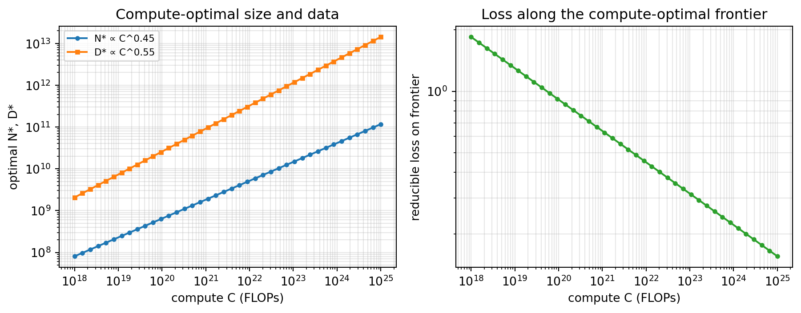
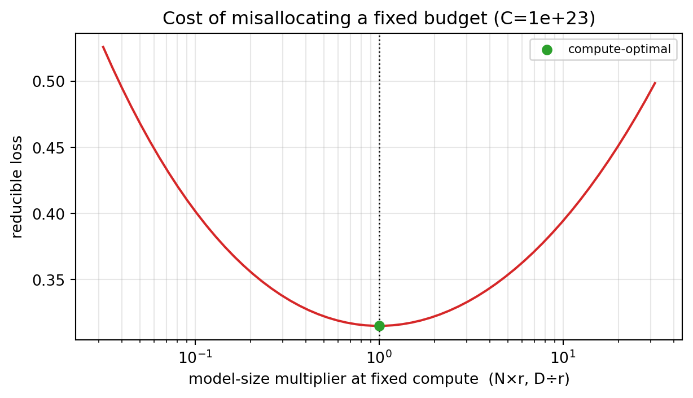

Scaling Laws: How Model Size, Data, and Compute Trade Off
Data Science
Artificial Intelligence
LLM
Scaling Laws
Training
Why the loss of a language model falls as a clean power law in parameters, data, and compute, and what that regularity implies for how a fixed training budget should be spent. We reconstruct the parametric loss surface from the Chinchilla fit in NumPy, derive the compute-optimal allocation, recover the published scaling exponents, and measure the loss you pay for building a model that is too big for its data.
Author
Prof. Shin
Published
August 9, 2026
[Concept Visualization] Along the compute-optimal frontier the reducible loss falls as a power law of the compute budget; any fixed allocation that is not compute-optimal (dashed) sits above that line. The three levers—model size N, data D, and compute C ≈ 6ND—are tied together by the loss surface L(N,D).
How large should a language model be? For most of deep learning’s history the answer was cultural rather than quantitative: bigger models were better, so you made the model as large as your hardware and patience allowed and trained it until the loss stopped improving. Scaling laws replaced that instinct with a measured relationship. Across many orders of magnitude, the cross-entropy loss of an autoregressive transformer falls as a smooth power law in the number of parameters, the number of training tokens, and the total compute spent [Kaplan et al., 2020]. Because the relationship is a power law—a straight line on log-log axes—it extrapolates, and extrapolation is what turns an observation into a planning tool: you can predict the loss of a model you have not yet trained and, more usefully, decide how to divide a fixed budget between a larger model and more data. This post reconstructs that reasoning from the parametric loss surface, derives the compute-optimal split, and shows what it costs to get the split wrong.
The Empirical Regularity: Loss Falls as a Power Law
The central finding is that test loss \(L\) decreases predictably as any one of three quantities grows while the others are held non-limiting: the parameter count \(N\), the training-token count \(D\), and the compute \(C\). Each relationship has the same shape,
\[L(N) = E + \frac{A}{N^{\alpha}},\]
where \(E\) is an irreducible floor—the entropy of the data that no model can beat—and the second term is the reducible loss that shrinks as a power of \(N\) with exponent \(\alpha\). The exponent is small (well under one), which is the sober part of the story: halving the loss above the floor requires increasing \(N\) by a factor of \(2^{1/\alpha}\), so returns diminish steeply. The value of the power-law form is not that scaling is cheap but that it is predictable.
To make the shape concrete we use the parametric fit reported for the Chinchilla study, which models the loss jointly in \(N\) and \(D\) as \(L(N,D) = E + A/N^{\alpha} + B/D^{\beta}\) [Hoffmann et al., 2022]. Holding \(D\) effectively infinite isolates the \(N\) term. On log-log axes the reducible loss must be a straight line whose slope is \(-\alpha\); fitting that slope back out is a check that the code and the math agree.
import numpy as npimport matplotlib.pyplot as plt# Chinchilla parametric loss (Hoffmann et al., 2022, "Approach 3"):# L(N, D) = E + A / N**alpha + B / D**betaE, A, alpha =1.69, 406.4, 0.34B, beta =410.7, 0.28def loss(N, D):return E + A / N**alpha + B / D**beta# Hold data non-limiting so only the N term varies.N_grid = np.logspace(6, 11, 100) # 1e6 .. 1e11 parametersD_huge =1e15floor = E + B / D_huge**beta # irreducible + data-limited floorreducible = loss(N_grid, D_huge) - floor # isolates the A / N**alpha termslope, _ = np.polyfit(np.log10(N_grid), np.log10(reducible), 1)print(f"fitted log-log slope = {slope:.4f} (expected -alpha = {-alpha})")print(f"L at N=1e8 : {loss(1e8, D_huge):.4f}")print(f"L at N=1e10: {loss(1e10, D_huge):.4f} (100x params buys ~{loss(1e8,D_huge)-loss(1e10,D_huge):.2f} nats)")fig, ax = plt.subplots(figsize=(6.5, 3.8))ax.loglog(N_grid, reducible, color="C0")ax.set_xlabel("parameters N"); ax.set_ylabel("reducible loss L(N) − floor")ax.set_title("Reducible loss follows a power law in N")ax.grid(alpha=0.3, which="both")fig.tight_layout(); plt.show()
fitted log-log slope = -0.3400 (expected -alpha = -0.34)
L at N=1e8 : 2.4903
L at N=1e10: 1.8777 (100x params buys ~0.61 nats)
Figure 1: Reducible loss L(N) − floor versus parameter count on log-log axes. A power law appears as a straight line, and the fitted slope recovers the exponent −α.
The fitted slope comes back at \(-0.34\), exactly the \(\alpha\) we put in, confirming the log-log line is a genuine power law rather than an artifact of the plotting range. The printed losses make the diminishing return tangible: multiplying the parameter count by one hundred, from \(10^8\) to \(10^{10}\), removes only about six tenths of a nat from the loss. Scaling works, but each additional decade of model size buys less than the last.
A Loss Surface in Three Variables
Treating \(N\) alone is misleading, because a large model trained on too little data stops improving well before it reaches the floor implied by its size—its loss is pinned by the \(B/D^{\beta}\) term instead. The honest object is the two-dimensional surface \(L(N,D)\), and the third variable, compute, is not independent of the first two. To leading order, training a dense transformer costs about six floating-point operations per parameter per token, so
\[C \approx 6\,N\,D.\]
This tie is what makes the problem interesting. You do not choose \(N\), \(D\), and \(C\) freely; you choose a compute budget \(C\) and then any split of it between model size and data traces a line \(D = C/(6N)\) across the loss surface. The next figure draws the surface with three of those iso-compute lines laid on top.
Figure 2: The loss surface L(N,D). Dashed white lines are iso-compute contours D = C/(6N); a fixed budget lets you slide along one of them, trading model size against data.
loss at N=1e9, D=2e10 : 2.5800
compute there : 1.20e+20 FLOPs
Reading the figure along any dashed line is the whole planning problem in miniature. Move to the lower-right and you have a big model starved of data; move to the upper-left and you have a small model swimming in tokens it cannot absorb. Somewhere in between, the line grazes its lowest loss contour. That tangency point is the compute-optimal allocation, and it is worth finding exactly.
Compute-Optimal Allocation: The Chinchilla Argument
For a fixed budget \(C\), substitute \(D = C/(6N)\) into the loss and minimize over \(N\). Setting the derivative to zero gives a closed form in which the optimal model size grows as a power of the budget,
so the two exponents sum to one, as they must when \(C \approx 6ND\). With the Chinchilla exponents \(\alpha=0.34\) and \(\beta=0.28\) these evaluate to roughly \(0.45\) for \(N\) and \(0.55\) for \(D\). The practical message is that model size and data should grow at nearly the same rate: when you get ten times the compute, you should make the model about three times bigger and train on about three times as much data, not pour the entire windfall into parameters. This was the correction the Chinchilla work made to the earlier prescription, which had recommended spending most new compute on model size [Kaplan et al., 2020; Hoffmann et al., 2022]. The code below finds the optimum numerically for a sweep of budgets and fits the exponents back out.
def optimal_alloc(C, n_scan=4000): N_scan = np.logspace(6, 12, n_scan) D_scan = C / (6* N_scan) L_scan = loss(N_scan, D_scan) i = np.argmin(L_scan)return N_scan[i], D_scan[i], L_scan[i]Cs = np.logspace(18, 25, 40)Nopt, Dopt, Lopt = np.array([optimal_alloc(C) for C in Cs]).TaN, _ = np.polyfit(np.log10(Cs), np.log10(Nopt), 1)aD, _ = np.polyfit(np.log10(Cs), np.log10(Dopt), 1)a_theory = beta / (alpha + beta)b_theory = alpha / (alpha + beta)print(f"N* ~ C^{aN:.3f} (closed form {a_theory:.3f})")print(f"D* ~ C^{aD:.3f} (closed form {b_theory:.3f})")fig, axes = plt.subplots(1, 2, figsize=(9.5, 3.8))axes[0].loglog(Cs, Nopt, "o-", ms=3, label=f"N* ∝ C^{aN:.2f}")axes[0].loglog(Cs, Dopt, "s-", ms=3, color="C1", label=f"D* ∝ C^{aD:.2f}")axes[0].set_xlabel("compute C (FLOPs)"); axes[0].set_ylabel("optimal N*, D*")axes[0].set_title("Compute-optimal size and data")axes[0].legend(fontsize=8); axes[0].grid(alpha=0.3, which="both")axes[1].loglog(Cs, Lopt - E, "o-", ms=3, color="C2")axes[1].set_xlabel("compute C (FLOPs)"); axes[1].set_ylabel("reducible loss on frontier")axes[1].set_title("Loss along the compute-optimal frontier")axes[1].grid(alpha=0.3, which="both")fig.tight_layout(); plt.show()
N* ~ C^0.451 (closed form 0.452)
D* ~ C^0.549 (closed form 0.548)

Figure 3: Left: compute-optimal N* and D* both grow as near-square-root power laws of the budget. Right: the reducible loss on the optimal frontier falls smoothly as compute increases.
The fitted exponents, near \(0.45\) and \(0.55\), reproduce the values of \(0.46\) and \(0.54\) reported from the original fit, which is the reassuring part: the same derivative that the paper solved analytically falls out of a crude grid search over budgets. The right panel shows the payoff of staying on the frontier—the loss above the floor descends as its own power law in compute, so if you always allocate optimally, spending more compute has a predictable, if slowing, return.
One caveat belongs here rather than buried in the conclusion. The exponents are robust, but the absolute tokens-per-parameter ratio that this parametric surface implies runs higher than the widely quoted “about twenty tokens per parameter” heuristic from the Chinchilla study’s other estimation methods. A later replication found that the published parametric coefficients are difficult to reconcile with the paper’s own iso-FLOP analysis and reported implausibly tight confidence intervals, so the exact ratio should be treated as fit-dependent while the near-equal scaling of \(N\) and \(D\) is the durable conclusion [Besiroglu et al., 2024]. The lesson to carry forward is the shape of the optimum, not a magic constant.
The Price of Misallocation
Knowing the optimum matters only if departing from it is expensive, so the last experiment quantifies the penalty. We fix a budget, compute the optimal split, then deliberately misallocate—eight times too many parameters (and therefore one-eighth the data), and the mirror-image mistake of eight times too much data. Because compute is held constant, both moves slide along the same iso-compute line, and the extra loss is the pure cost of being off the tangency point.
C0 =1e23Nc, Dc, Lc = optimal_alloc(C0)factor =8.0N_heavy, D_heavy = Nc * factor, Dc / factor # params-heavy: big model, little dataN_data, D_data = Nc / factor, Dc * factor # data-heavy: small model, lots of dataL_heavy = loss(N_heavy, D_heavy)L_data = loss(N_data, D_data)print(f"budget C = {C0:.0e} FLOPs")print(f" optimal N={Nc:.2e} D={Dc:.2e} L={Lc:.4f}")print(f" params-heavy N={N_heavy:.2e} D={D_heavy:.2e} L={L_heavy:.4f} (+{L_heavy-Lc:.4f})")print(f" data-heavy N={N_data:.2e} D={D_data:.2e} L={L_data:.4f} (+{L_data-Lc:.4f})")# The params-heavy model's loss is reachable by an OPTIMAL model on a smaller budget.Cext = np.logspace(21, 23, 400)Lext = np.array([optimal_alloc(C)[2] for C in Cext])C_needed = Cext[np.argmin(np.abs(Lext - L_heavy))]print(f" that loss is optimal at C={C_needed:.2e}"f" -> the misallocation wastes {C0/C_needed:.1f}x compute")ratios = np.logspace(-1.5, 1.5, 60)Lr = [loss(Nc * r, Dc / r) for r in ratios]fig, ax = plt.subplots(figsize=(6.5, 3.8))ax.semilogx(ratios, np.array(Lr) - E, color="C3")ax.axvline(1.0, color="k", ls=":", lw=1)ax.scatter([1.0], [Lc - E], color="C2", zorder=5, label="compute-optimal")ax.set_xlabel("model-size multiplier at fixed compute (N×r, D÷r)")ax.set_ylabel("reducible loss")ax.set_title(f"Cost of misallocating a fixed budget (C={C0:.0e})")ax.legend(fontsize=8); ax.grid(alpha=0.3, which="both")fig.tight_layout(); plt.show()
budget C = 1e+23 FLOPs
optimal N=1.46e+10 D=1.14e+12 L=2.0050
params-heavy N=1.17e+11 D=1.42e+11 L=2.0695 (+0.0645)
data-heavy N=1.83e+09 D=9.12e+12 L=2.0749 (+0.0699)
that loss is optimal at C=2.98e+22 -> the misallocation wastes 3.4x compute

Figure 4: Reducible loss as a fixed compute budget is reallocated between model size and data. The minimum at multiplier 1 is the compute-optimal point; both over-sizing and under-sizing the model raise the loss.
The curve is a shallow but real bowl. Making the model eight times too large raises the loss by roughly six hundredths of a nat, and the symmetric data-heavy error costs about the same—confirming that the optimum is a true interior minimum rather than a corner. The more striking number is the compute interpretation: an optimally allocated model reaches the params-heavy model’s loss on roughly a third of the budget, so the oversized model has thrown away most of its compute. This is exactly the argument that reframed a generation of “too big, undertrained” models. The penalty for modest errors is mild, which is why the bowl is shallow, but the penalty compounds into wasted GPU-months once the misallocation is large.
What the Laws Do and Don’t Promise
Scaling laws are an empirical regularity fitted over a particular family of dense transformers trained with a particular recipe, and their reach ends where those conditions do. The fitted coefficients \(E\), \(A\), \(B\), \(\alpha\), \(\beta\) depend on the architecture, the tokenizer, the data distribution, and the optimizer; change the data quality or add a fundamentally different component and the surface shifts. The curves also say nothing about downstream capability—they predict next-token loss, and the mapping from loss to whether a model can pass an exam or write correct code is neither linear nor guaranteed to be smooth. Extrapolation beyond the fitted range is a genuine leap of faith, since a power law is only known to hold where it has been measured. Finally, the compute-optimal split minimizes training loss for a training budget; if a model will be served to millions of users, the inference cost changes the calculus and can justify training a smaller model on far more data than the Chinchilla point recommends, deliberately trading extra training for cheaper deployment [Sardana et al., 2024]. The laws are a planning instrument, not a law of nature.
Conclusion
The reason scaling laws matter is that they convert a budgeting question into arithmetic. The loss surface \(L(N,D) = E + A/N^{\alpha} + B/D^{\beta}\), combined with the compute identity \(C \approx 6ND\), yields a compute-optimal allocation in which model size and data grow at nearly equal rates—the exponents near \(0.45\) and \(0.55\) we recovered by minimizing the surface directly. The practical payoff is negative as much as positive: it tells you not to keep enlarging a model that its data can no longer feed, and our misallocation experiment put a price on ignoring that, with an eight-fold oversized model wasting most of its compute. What the laws do not give is a guarantee that low loss means high capability, or that the fitted exponents survive a change of data, architecture, or deployment regime. Used as a map of the region where they were measured, they are the most reliable planning tool large-model training has; used as a promise about the territory beyond, they are a hypothesis awaiting the next fit.
References
Kaplan, J., McCandlish, S., Henighan, T., Brown, T. B., Chess, B., Child, R., Gray, S., Radford, A., Wu, J., & Amodei, D. (2020). Scaling Laws for Neural Language Models. arXiv preprint arXiv:2001.08361.
Hoffmann, J., Borgeaud, S., Mensch, A., Buchatskaya, E., Cai, T., Rutherford, E., de Las Casas, D., Hendricks, L. A., Welbl, J., Clark, A., Hennigan, T., Noland, E., Millican, K., van den Driessche, G., Damoc, B., Guy, A., Osindero, S., Simonyan, K., Elsen, E., Rae, J. W., Vinyals, O., & Sifre, L. (2022). Training Compute-Optimal Large Language Models. Advances in Neural Information Processing Systems (NeurIPS). arXiv:2203.15556.
Besiroglu, T., Erdil, E., Barnett, M., & You, J. (2024). Chinchilla Scaling: A Replication Attempt. arXiv preprint arXiv:2404.10102.
Sardana, N., Portes, J., Doubov, S., & Frankle, J. (2024). Beyond Chinchilla-Optimal: Accounting for Inference in Language Model Scaling Laws. Proceedings of the 41st International Conference on Machine Learning (ICML). arXiv:2401.00448.